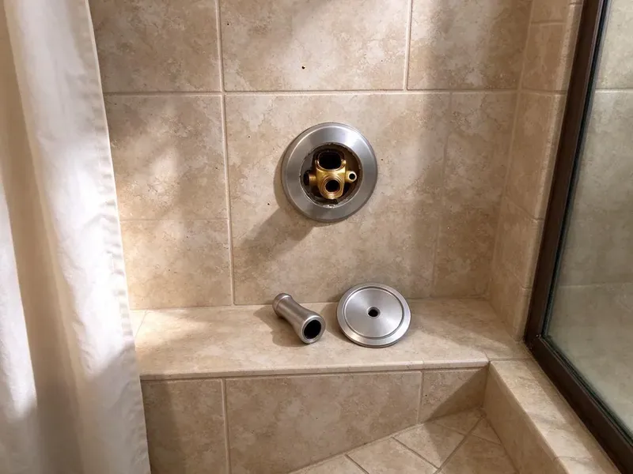

Bathroom Plumbing in Horace, ND
Facing a plumbing issue in your Horace bathroom? HPN Plumbing provides reliable repairs and installations across North Dakota.
- Toilets, Faucets and Showers
- Warrantied Work
- Clean, Respectful Plumbers
- Expert Plumbers

Need Bathroom Plumbing Service Today in Horace, ND?
Call today and we will repair or replace your bathroom fixtures with quality parts and a clear price.
Your Go-To for Bathroom Plumbing in Horace, ND
At HPN Plumbing, we understand the importance of a fully working bathroom in your Horace, ND home. Our complete bathroom plumbing services keep every faucet, drain, and fixture operating efficiently and reliably.
Our expertise includes:
- Toilet repair, replacement and new installation including wax ring and flange
- Faucet and shower cartridge replacement for Moen, Delta and Kohler
- Precise toilet repair and replacement

Additional Bathroom Plumbing Services in Horace, ND
From toilets to showers, our bathroom plumbing team in Horace, ND handles repairs, installs, and upgrades with tidy, code-compliant work.


Customers
Why Choose HPN Plumbing for Bathroom Plumbing in Horace, ND?
Our plumbers carry common parts for the most popular fixture brands. That means faster repairs and fewer return trips.
- Tidy Work, We protect floors and tile and clean up before we go.
- Skilled Technicians, Our plumbers are well trained and experienced in all aspects of bathroom plumbing, from antique fixtures to modern smart home systems.
- Quality Parts, We use reputable brands and high-quality materials for all repairs and installations, for durability and performance.
Citywide Coverage
No matter where you are located in Horace, ND, our professional plumbers can reach you quickly. We are dedicated to giving all residents access to quality bathroom plumbing solutions.
Experienced Team
Our team is trained in both repair and installation, so they can fix a cartridge or set up a new shower system. They explain options in plain language.
Safety-First Approach
HPN Plumbing puts a priority on the safety of your home and family. Our plumbers follow rigorous safety protocols and make sure all bathroom plumbing work, including gas lines for water heaters, meets or exceeds all local regulations.
Trusted Certified Horace Plumbing Services Professionals
At HPN Plumbing, we take pride in providing certified plumbing services throughout Horace, ND. Backed by leading industry credentials, our experienced plumbers combine technical skill with genuine customer care. Whether it is repair, installation, or maintenance, we follow strict safety and quality standards to deliver long-lasting results you can trust.
Call Us Now PHCC Plumbing Contractor Recognition
PHCC Plumbing Contractor Recognition Better Business Bureau (BBB) Accreditation
Better Business Bureau (BBB) Accreditation Angi Certified Pro
Angi Certified Pro ISO 9001 Quality Management Certification
ISO 9001 Quality Management CertificationTrusted Bathroom Plumbing Solutions in Horace, ND
Faucet Repair and Replacement in Horace, ND
Dripping faucets are more than just annoying, since they can lead to real water waste and contribute to mildew growth. Our plumbers are skilled at repairing all types of bathroom faucets, including compression, cartridge, ceramic disc, and ball faucets. If a repair is not cost-effective, we offer professional faucet replacement, helping you choose and install a new fixture that fits your bathroom style and budget in Horace, ND. We work with brands like Moen, Delta, and Kohler.

Water Pressure & Flow Issues in Horace
Low water pressure in your shower or sink in Horace can be very frustrating. This can be caused by anything from mineral buildup in pipes to issues with your water heater or main supply line. Water in North Dakota is often very hard, with high mineral and sulfate content that leaves deposits in water heaters and fixtures. We diagnose the root cause of pressure problems and apply solutions like descaling or pressure regulator adjustments to restore full flow.
Bathtub Faucet and Drain Replacement in Horace
Tub faucets and spouts wear out from mineral buildup and daily use. We replace tub spouts, diverters and valve trim and can upgrade older two-handle valves to single-handle pressure-balance units. We also replace tub drains and overflow assemblies to fix leaks below the tub. These repairs help prevent water damage to the ceiling below.
Sink Repair and Replacement in Horace, ND
A clogged or leaking bathroom sink can disrupt your daily routine. Our team is skilled in diagnosing and repairing all sink-related plumbing issues, including P-trap leaks, drain clogs from hair and soap scum, and slow drainage. We can also replace old or damaged sinks with a proper connection to your existing plumbing. Water in North Dakota is often very hard, with high mineral and sulfate content that leaves deposits in water heaters and fixtures. We often clear mineral buildup from sink aerators and drains in Horace, ND homes.
Toilet Installation and Replacement in Horace, ND
When a toilet is cracked, inefficient or simply outdated, replacement is often the best choice. We install high-efficiency WaterSense toilets, comfort height models and wall-hung units from brands like TOTO, Kohler and American Standard. Every installation includes a new wax ring, closet bolts and supply line. We haul away the old toilet.
Sink Repair and Installation in Horace, ND
We repair leaking sink drains, broken pop-up assemblies and failed supply lines. For new vanities and sinks, we install undermount, vessel and pedestal sinks with matching faucets and drains. We replace corroded sink drain assemblies and P-traps to stop leaks and odors. Clean, secure connections protect your cabinetry.
Faucet Repair & Replacement in Horace, ND
Dripping faucets can be a constant headache and lead to higher water bills. Our plumbers are experts in diagnosing and repairing all types of bathroom faucets, from cartridge replacements to O-ring fixes. If a repair isn't cost-effective, we offer a wide selection of durable faucet replacements and handle the installation for leak-free operation in your Horace, ND bathroom.

Preventative Maintenance in Horace, ND
Many bathroom plumbing issues can be avoided with regular maintenance. HPN Plumbing offers preventative checks that include inspecting seals, testing water pressure, and clearing minor drain obstructions before they become major clogs. This preventive approach saves you money and extends the life of the bathroom fixtures in your Horace, ND home.
Expert Bathroom Plumbing Near Me in Horace, ND
When you search for "bathroom plumbing near me" in Horace, ND, HPN Plumbing is your dependable local choice. Our nearby teams ensure a fast response to any plumbing call, cutting wait times for our customers.
When you search for "bathroom plumbing near me" in Horace, ND, HPN Plumbing is your local answer. We take pride in being a neighborhood service, always ready to send a qualified plumber to your location quickly.
HPN Plumbing at a Glance
- Fully licensed plumbing team covering Horace, ND
- Same-day appointments and 24/7 emergency response
- Clear written estimates, no hidden fees
- 4.9-star rated by 408+ North Dakota customers
Horace Map
Horace Information
- Population
- 5,643
- Area codes
- Local
- Service area
- Horace and communities within 40 miles
- Nearby
- West Fargo, Fargo, Wahpeton, Valley City
Mineral scale can build up in faucet cartridges, showerheads and toilet valves, so bathroom fixtures in Horace, ND sometimes need repair or replacement sooner than expected.
Expert Services
Trust our professionals for reliable HPN Plumbing solutions in Horace, ND.
Our Specialized Plumbing Services in Horace, ND
At HPN Plumbing, we provide a complete range of plumbing services across Horace, ND. From leak detection to full system installations, our team ensures fast, precise, and affordable service for both residential and commercial properties. Explore our core services below:


How Our Bathroom Plumbing Process Works in Horace, ND
We follow a simple, professional approach to deliver quality bathroom plumbing services every time.
Request a Quote
Call (701) 403-1348 and tell us which fixture needs attention and what you are noticing. We schedule a plumber at a time that works for you.
Inspect and Recommend
We inspect the fixture and plumbing and explain repair and replacement options. You get a written price before work starts.
Repair or Install
We complete the work with quality parts and test for leaks and proper operation. We clean up and haul away old fixtures.
Frequently Asked Questions About Bathroom Plumbing in Horace
The cost of bathroom plumbing repair in Horace can vary widely depending on the issue. A simple faucet repair might be $150 to $300, while a more involved toilet replacement could range from $400 to $800, including the new fixture. We provide a detailed estimate after inspecting the problem.
Regular maintenance is key. Avoid flushing anything but toilet paper, use drain strainers to catch hair in sinks and showers, and address minor leaks promptly. Consider a water softener if you have hard water, to reduce mineral buildup in fixtures and pipes.
HPN Plumbing services and installs all major brands of bathroom fixtures. This includes popular names like Kohler, American Standard, Moen, Delta, TOTO, and Sterling. We can also work with less common or specialty brands and find the right parts for your specific needs.
While some minor issues like replacing a showerhead might be DIY-friendly, most bathroom plumbing problems are best handled by a professional. Incorrect repairs can lead to worse leaks, water damage, or even code violations. For anything beyond the simplest fix, calling HPN Plumbing is safer and often more cost-effective in the long run.
We install and service Moen, Delta, Kohler, American Standard, TOTO, Pfister and commercial brands like Sloan and Zurn.
Minor repairs like replacing a faucet or toilet typically do not require a permit. However, major renovations, relocating plumbing lines, or installing new fixtures that alter the existing plumbing system typically require a permit from your local building department to stay code compliant. Permits are usually required for water heater installs, sewer work, new fixtures and remodels that change the plumbing layout.
Low water pressure can come from several issues, including mineral buildup in pipes or showerheads, a failing pressure regulator, leaks in your plumbing system, or even issues with your water heater. Water in North Dakota is often very hard, with high mineral and sulfate content that builds scale in water heaters and fixtures. Our plumbers can diagnose the exact cause.
Fixture repairs and like-for-like replacements usually do not need a permit. Moving drains, adding fixtures or remodeling often does. We handle permits when required.
What People Are Saying About Our Plumbing Experts?

Daniel K.
A pipe burst at 11 pm and they actually answered. The plumber showed up within the hour, shut everything down, and had us back to normal the next morning. Could not ask for more.
Emergency Plumbing · Horace, ND
James P.
Our commercial plumbing system had a leak under the sink, and HPN Plumbing handled it professionally. The plumbers arrived quickly and restored everything without disruption to our customers.
Commercial Plumbing · Fargo, ND
Emily R.
I called HPN Plumbing for plumbing repair, and the technician was fast, polite, and thorough. They explained the problem clearly and fixed it the same day. I will definitely hire them again. Highly recommended!
Plumbing Repair · Valley City, ND
Patricia H.
We had a slab leak that two other companies could not find. HPN Plumbing located it in under an hour, explained our options, and the price matched the quote to the dollar.
Slab Leak Repair · Grand Forks, ND
Sofia M.
Two new toilets installed in one visit, no mess left behind, and the tech even adjusted a faucet he noticed was dripping. Fair pricing and really friendly.
Toilet Installation · Fargo, ND
Mark T.
When our office needed drain cleaning, HPN Plumbing provided quick, reliable service. The plumber arrived on time and made sure every drain flowed perfectly before leaving. Very satisfied.
Drain Cleaning · Wahpeton, ND